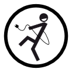

Desconecta del IBEX35
Proyecto
Motivación
Estrategia
Colabora
Información
Quienes somos
Recursos
Créditos
Sectores
Noticies
Sign up
Log in
All Posts
2017
Nace "El Salto": Medios independientes unidos
2017-05-04
2015
Video: La historia de Coop57
2015-11-04
Taller de alternativas y acompañamiento al salto
2015-02-23
2014
Ordago de Cafe amb Llet para ampliar su difusión a toda Cataluña
2014-02-08
Mercadona, ¿supermercados de confianza?
2014-02-05
Eticom-SomConnexió, construyendo la alternativa ética integral para las telecos
2014-01-09
Fiare despega
2014-01-08
2013
El siguiente paso: Redes eléctricas municipalizadas
2013-12-29
Cómo vestir sin mano de obra esclava
2013-10-16
Nace GuifiBaix, la cooperativa que te instala Guifi.net en el Baix Llobregat
2013-10-11
Las grandes empresas en bolsa ganan 14.633 millones de enero a junio
2013-09-18
El decálogo Robin Hood en Yorokobu
2013-09-18
SERYES - Una historia de intercooperación
2013-07-17
Asamblea General de SomEnergia 2013
2013-05-24
#Oligopoly 2: El imperio contra todos.
2013-05-17
Campaña Re-Mueve tu dinero
2013-03-31
Las redes, ¿quién las paga y quién las posee?: un caso evidente de abuso de poder
2013-03-11
Compartir, otra forma de desconectarse
2013-01-14
2012
Documentos TV: Finanzas Éticas
2012-12-31
Acció de salt col·lectiu a SomEnergia a Sant Joan Despí
2012-11-16
Próximo Salvados: "Oligopoly, el juego de la energía". ¿Alternativas?
2012-11-16
¿Por qué pagamos la energía más cara de Europa?
2012-10-29
Charlas de Desconexión IBEX35 en Sant Joan Despí
2012-06-23
Participa: Borrador colaborativo para las alternativas a la banca
2012-06-09
El 26 de Junio, 5 empresas decidiran en subasta qué pagaremos de luz
2012-06-01
Dos formas diferentes de ser una banca ética
2012-05-24
Facilitando las colaboraciones: nueva wiki
2012-05-22
Charlas en Mordor (La Caixa): Alternativas a la gran Banca
2012-05-22
Castigados sin publicidad de La Caixa
2012-05-19
La CNMV confirma las sospechas de manipulaciones en la subasta eléctrica
2012-05-15
LaTele.cat busca financiación y colaboradores
2012-05-14
Primera ficha: Som Energia
2012-05-12
Inicio del proyecto "Desconexion IBEX35"
2012-05-12